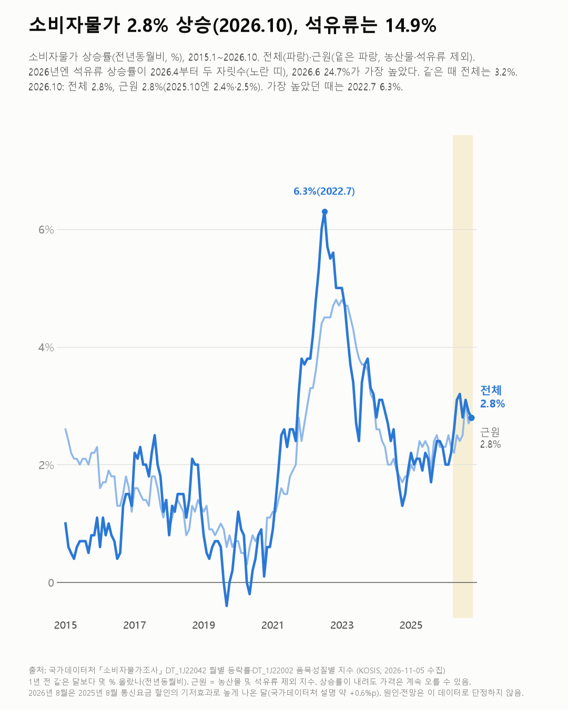
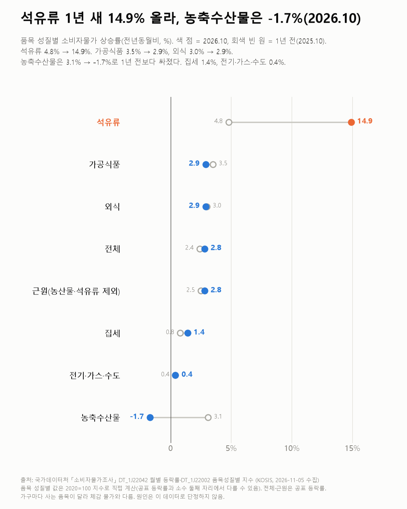

물가는 2%대에 머무는데, 기름값은 크게 뛰었어요
물가 오름폭은 2%대인데 기름값은 따로 크게 뛰었어요. 오름폭이 작아도 가격은 해마다 쌓여요.

3줄 요약
- 2026년 10월 소비자물가는 1년 전보다 2.8% 올랐어요(1년 전엔 2.4%).
- 기름값(석유류)은 4월부터 1년 전보다 10% 넘게 올랐고, 10월엔 14.9%예요. 가장 높았던 건 6월 24.7%였어요.
- 2020년 10월보다 2026년 10월 물가는 전체 20.5%, 외식 28.5%, 석유류 49.2% 높아요.
6.3%. 2022년 7월, 소비자물가가 한 해 전보다 이만큼 올랐어요. 이 표(2015년~)에서 가장 높은 달이에요. 그 숫자를 옆에 두고 올해를 봤어요. 2026년 1~10월 평균은 2.7%로, 그때의 절반이 안 돼요.
10월은 2.8%예요(1년 전 2.4%). 농산물과 석유류를 뺀 근원물가도 2.8%예요(1년 전 2.5%). 전체 물가와 소수점까지 같더라고요.
기름값은 사정이 달라요. 석유류는 2026년 4월부터 1년 전보다 10% 넘게 올랐어요. 6월 24.7%가 가장 높았고 10월은 14.9%예요(1년 전 4.8%). 전체 물가도 5월 3.1%, 6월 3.2%로 2024년 3월(3.1%) 뒤 처음 3%대에 올랐어요. 6월 3.2%는 2023년 12월(3.2%) 이후 가장 높아요.
1년 전보다 싸진 것도 있어요. 농축수산물은 2025년 10월 3.1%에서 2026년 10월 -1.7%가 됐어요. 가공식품(3.5% → 2.9%)과 외식(3.0% → 2.9%)은 오름폭이 조금 줄었고, 집세는 0.8%에서 1.4%로 커졌어요.

오름폭이 2%대로 내려와도 가격은 쌓여요. 2020년 10월부터 2026년 10월까지 지수로 보면 전체 20.5%, 외식 28.5%, 가공식품 27.7%, 석유류 49.2%가 올랐어요.
1년 전과 견준 숫자는 매달 새로 시작하는데, 장바구니 가격은 6년 치를 한꺼번에 들고 있었어요.
이 숫자는 어디서 왔나요
출처
어떻게 셌나요
- 물가 상승률은 1년 전 같은 달보다 몇 % 올랐는지예요(전년동월비). 상승률이 내려도 가격은 계속 오를 수 있어요.
- 근원물가는 농산물과 석유류를 뺀 물가예요.
- 석유류·외식 같은 품목 성질별 상승률은 지수로 직접 계산해서, 공표값과 소수 둘째 자리에서 다를 수 있어요.
- 2026년 8월(3.1%)은 2025년 8월 통신요금 할인 때문에 높게 나온 달이에요. 1년 전 값이 낮았던 탓에 생긴 기저효과로, 국가데이터처 설명으로는 약 +0.6%p예요.
새 글 나오면 받아 보기
피드 리더 앱에 이 사이트 주소를 한 번 넣어 두면, 새 글이 올라올 때 앱에 떠요. 가입이나 메일 주소는 필요 없어요.
받는 법 보기
- 피드 리더 앱을 하나 골라요. 새 글을 모아 보여 주는 앱이에요. 예를 들면 Feedly나 Inoreader가 있어요. 둘 다 무료고 웹·휴대폰에서 써요.
- 앱에서 '구독 추가'(+)를 누르고 아래 주소를 붙여 넣어요.
- 끝이에요. 새 글이 올라오면 앱 목록에 떠요.
https://protofu.github.io/opendata-insight/feed.xmlFeedly를 쓴다면 여기를 눌러 바로 추가할 수도 있어요.